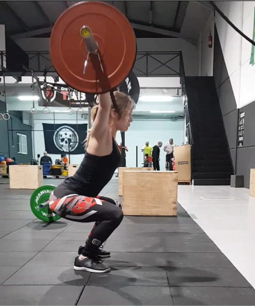

¿Qué es CrossFit?
El crossFit es un tipo de entrenamiento tipo militar, el cual consiste en desarrollar potencia, ganar control del peso corporal (por medio de la gimnasia) y realizar ejercicios funcionales de alta intensidad para mejorar la capacidad funcional. Este entrenamiento incluye muchos ejercicios y movimientos diferentes, siempre variantes. Los movimientos que se realizan en el crossfit son de tipo funcional, ya que van a intervenir distintos movimientos corporales que trabajan distintos grupos musculares al mismo tiempo para lograr cumplir una acción en específico de forma natural, efectiva y eficiente. El crossfit se caracteriza por incluir movimientos de gimnasia olímpica (para mejorar la flexibilidad y el control de fuerza y peso corporal), levantamiento de pesas olímpicas (para desarrollar una alta potencia) y ejercicios cardiovasculares (para mejorar la capacidad cardiaca y pulmonar).
¿Cuáles son sus beneficios?
1.- Ayuda a eliminar grasa
Uno de los principales beneficios de hacer crossfit es que ayuda a eliminar grasa. Como consecuencia de la intensidad de los ejercicios que propone, el crossfit es un método de entrenamiento con el que podremos bajar de peso de forma rápida y eficaz. Es un tipo de entrenamiento en el que casi no existe descanso. Se trabaja mediante repeticiones que queman grasa de forma rápida. Con ello, podremos obtener resultados en poco tiempo que a su vez nos ayudarán a motivarnos para seguir adelante con nuestro plan de ejercicio. Naturalmente, siempre debe ser acompañado de una dieta sana y equilibrada.
2.- Hacer crossfit ayuda a implementar nuestra resistencia
Otro de los beneficios añadidos de hacer crossfit es que podemos ganar resistencia. Esto es especialmente beneficioso no solo para hacer ejercicio sino para nuestra propia rutina. Dicha resistencia repercutirá favorablemente en nuestra calidad de vida. Se debe a que genera una mejor salud cardiovascular. Con ella podremos prevenir afecciones como infartos, colesterol y en general conseguir una mejor calidad y salud para nuestra circulación.
Entre los ejercicios que ayudan a ello están los saltos, sentadillas, flexiones, abdominales que trabajan de forma integral y completa todos los músculos de nuestro cuerpo para ganar resistencia en todo él. Se mejora la capacidad aeróbica y se tonifica el cuerpo. A cambio, no perderemos músculo pero sí la grasa que nos sobre.
3.- Hacer crossfit aumenta tu musculatura
Como hemos dicho, al hacer crossfit mejoramos nuestra resistencia sin repercutir negativamente en nuestra musculatura. Es así que es un tipo de entrenamiento indicado tanto para hombres y mujeres que implementa nuestra fuerza. Es un tipo de entrenamiento que se basa en la regularidad y que también en este sentido puede aumentar la fuerza muscular. Entre los ejercicios que contribuyen a hacerlo están los de tríceps, bíceps, las dominadas y muchas otras que podrás conocer en este artículo donde te hablamos de los diferentes tipos de entranamiento: HIIT, entrenamiento funcional y crossfit.
Ahora bien, para obtener buenos resultados es siempre fundamental hacer los ejercicios correctamente. Se debe comenzar progresivamente, con una etapa de adaptación. Poco a poco aumentaremos la intensidad y duración de los ejercicios. Otra opción muy beneficiosa para someter a “estrés” y adaptación a nuestro cuerpo es ir cambiando los circuitos y tipos de ejercicios de nuestra rutina. Con ello, obtendremos de forma constante resultados impidiendo la adaptación de nuestro organismo.
4.- Hacer crossfit no es rutinario
Al contrario que el ejercicio físico clásico que era tedioso y daba bastante pereza, hacer crossfit es muy divertido. Incluye ejercicios muy dinámicos pensados para volver la actividad mucho más motivadora. Esto, junto con los ejercicios que se realizan en grupo y con los que siempre se hacen nuevas amistades hacen del crossfit una de las actividades más interesantes que existen.
5.- Permite obtener resultados en poco tiempo
Como hemos dicho previamente, hacer crossfit supone hacer un tipo de ejercicio con el que podemos obtener resultados rápidamente. De un lado, gracias a la intensidad de sus ejercicios y del otro gracias a la motivación que genera en nosotros nos ofrece buenos resultados en poco tiempo. Este es un aspecto fundamental en el deporte en general.
Frente a otros tipos de entrenamiento que requieren de mucho más tiempo para obtener resultados, hacer crossfit da recompensas a corto plazo. Este punto es crucial: con él conseguiremos antes la motivación necesaria para poder continuar con nuestros ejercicios.
6.- Contribuye a estilizar nuestra figura
El crossfit es un ejercicio que gracias a que ofrece resultados rápidos, quema grasa y trabaja todos los músculos de nuestro cuerpo puede ofrecer una figura mucho más estilizada en poco tiempo. Si bien la estética no debería ser nuestra prioridad, lo cierto es que hacer crossfit también cumple con ella. Son ejercicios a través de los cuales reducimos grasa, tonificamos nuestro organismo y ganamos una mejor apariencia.
7.- Es la puerta a otro tipo de ejercicios
Por último (aunque existen muchos más beneficios) queremos destacar la tarea introductoria que hace el crossfit respecto a otros ejercicios. En efecto, nos confiere un estado de forma que es necesario para hacer otro tipo de ejercicios. Si llevas tiempo sin hacer ejercicio es ideal para ti. Como complemento al crossfit podrás realizar otros deportes que sumarán nuevas ventajas a tu actividad física.

INICIO

Otros artículos interesantes:
Los atletas de Crossfit más populares
Lo que dice la ciencia sobre el Crossfit
Curiosidades sobre Crossfit que no conocías
Suplementación deportiva
La suplementación deportiva se conoce por ser un producto que se incluye en la alimentación de un/a deportista con el objetivo de obtener mejoras en el rendimiento. Este concentrado se compone de sustancias como: hidratos, minerales, proteínas, vitaminas, etc.
En los siguientes enlaces se habla de cada tipo de suplemento:
Mi canal de RSS